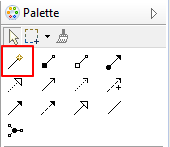
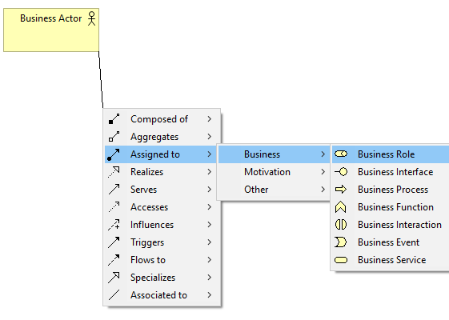

Connecting one element to another in a View depends on whether the relationship is allowed according to the ArchiMate specification. For example, you cannot connect an Assignment relationship from an Application Component to a Business Actor. Unless you are very familiar with the rules governing the relationships in ArchiMate it can be frustrating to find the allowable relationships between one element and another. The "Magic Connector" solves this problem.
The Magic Connector in the Palette
The Magic Connector has two uses - firstly to create a new allowed connection between one element and another, and secondly to create a new element and an allowed connection between the source element and the newly created element.
To create a connection between a source and a target element using the Magic Connector follow these steps:
Drawing a connection using the Magic Connector
To create a new element and connection in one operation using the Magic Connector follow these steps:
In the following example a new Business Role element will be created together with a new Assignment relationship connecting to the original selected Business Actor element.
Using the Magic Connector to create a new element and connection
If you hold down the Ctrl key (or the Command key on Mac) at the same time as clicking on a blank area of the canvas then the Elements will be shown first followed by the Connections in the popup menus (this behaviour can be reversed in Preferences):

Using the Magic Connector to create a new element and connection while pressing the Ctrl / Command key